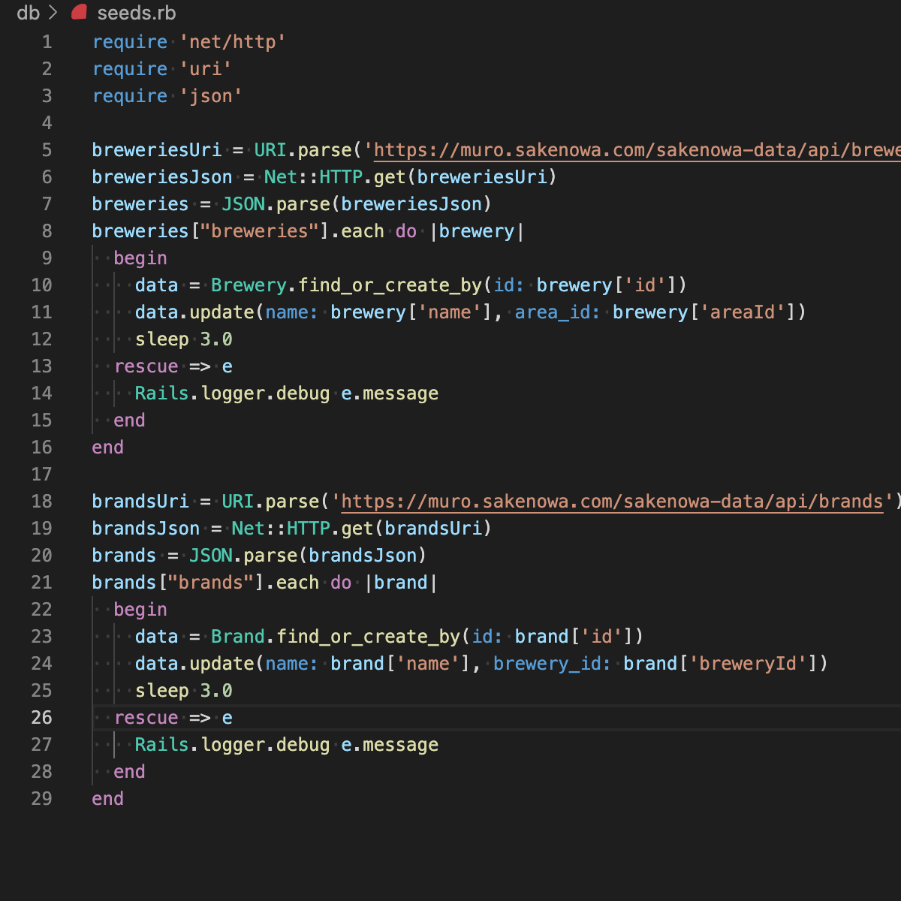

のんべぇ（日本酒レビューアプリ）

開発環境
Ruby / Ruby on Rails / MySQL / GitHub / Heroku / Visual Studio Code
-
概要
制作時間 170時間 URL https://nonbay.herokuapp.com/ ID admin PASS 0000 -
動作テスト
テスト用アカウント
mail test@mail.com PASS 000000
OUTLINEアプリケーションの概要
オリジナルアプリケーションとして日本酒の感想を共有するSNSを開発しました。
主な機能は、ユーザー登録機能、レビュー投稿機能、おすすめ銘柄表示機能です。
ユーザー登録するとトップページに好みの味わいに近い銘柄が最大5つ表示されます。
地域選択メニューから蔵元、銘柄を選択してレビューを投稿することができます。
銘柄の味わいはユーザーがレビュー投稿した際に評価した味わいの平均値となっています。
初期状態で登録されている蔵元、銘柄はさけのわデータを利用しています。
-
開発に至った経緯
日本酒に興味があるのですがあまり量が飲めず、なかなか自分好みの日本酒を見つけることができませんでした。
ある時日本酒好きの友人が飲んだことのある日本酒を記録したいという話をしていたので、双方の課題を解決するアプリケーションを開発したいと考えました。
-
開発で工夫したこと
1つ目は投稿されたレビューの平均値を銘柄の味わいとして保存する機能です。レビュー投稿時に投稿した銘柄に投稿されたレビュー全体から味わいの平均値を取得し、銘柄の味わいに代入しています。
2つ目は好みに近い銘柄を表示する機能です。ユーザー登録時に設定した味わいの各数値±1の範囲内かつ差が少ない順に表示されるようにSQL文を記述しました。
3つ目はさけのわデータから蔵元、銘柄のデータを取得していることです。メジャーな蔵元、銘柄のデータをAPIを利用して取得することで新たに登録する手間を省略しています。
-
今後実装したいと思っていること
まずお気に入り銘柄の登録機能を実装したいと考えています。好みの日本酒を表示、記録する上でユーザーが最も必要とする機能だと感じたためです。
また、味わいから銘柄を検索する味わい検索機能やキーワード検索機能も実装していきたいと考えています。